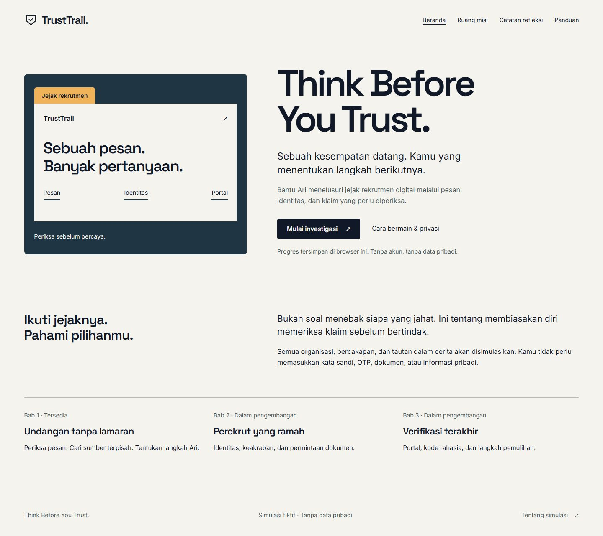
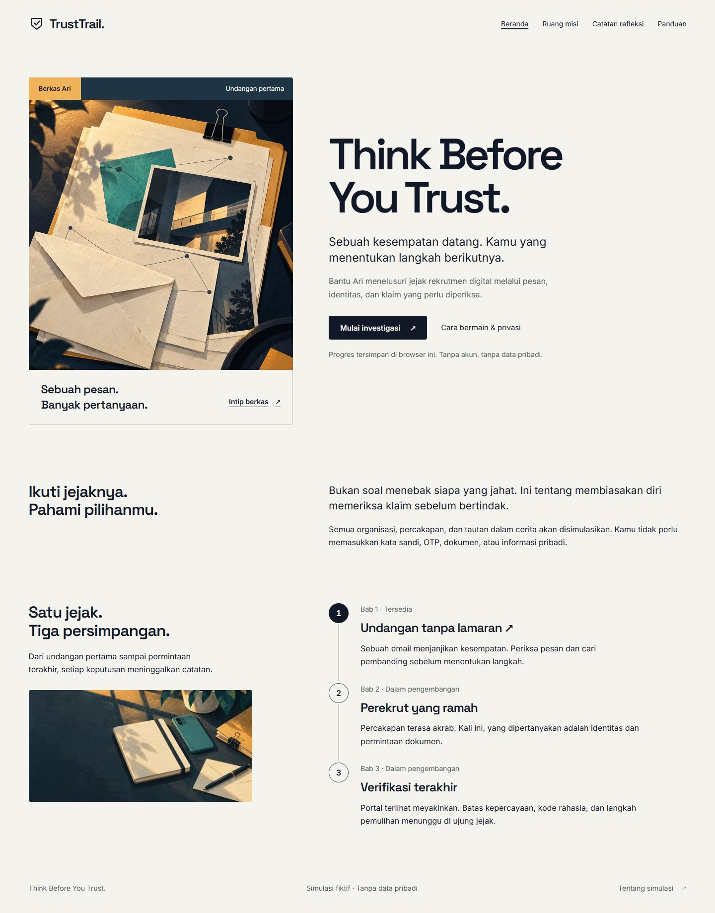

TrustTrail's bounded visual upgrade, 29 October 2026. Compare the same Chapter 1 journey at 360, 768 and 1440 pixels. Screenshots are local files; this viewer sends no requests to external services.


Full-page captures use a 1000 px viewport height. A modal occupies that viewport; the page visible below it in a tall full-page image is capture context, not an uncovered modal. Final after-images wait for artwork and finite reveal motion. Original before-captures can include a transient focus or reveal state.
Validation and remaining work · Art direction · Artwork provenance